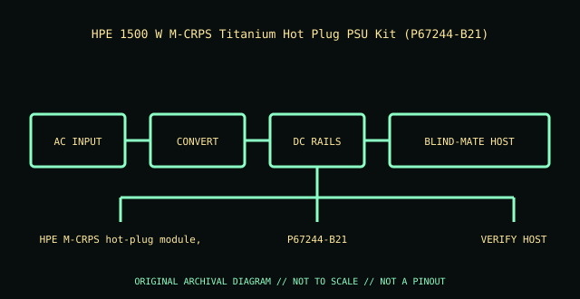

[ POWER CONVERSION // IDENTIFIED MODEL ]
HPE 1500 W M-CRPS Titanium Hot Plug PSU Kit (P67244-B21)
Exact module identity: HPE P67244-B21. This record applies only to this manufacturer option/PID; nominal wattage or a similar shell does not prove cross-model compatibility.

HIGH-VOLTAGE WARNING: Disconnect mains before external inspection. Never open a PSU. Internal capacitors may retain lethal charge after unplugging. Do not probe or repair its interior; use qualified service or replace the unit.
Model-specific ratings & fit
| Manufacturer identity / exact module | HPE P67244-B21 — HPE 1500 W M-CRPS Titanium Hot Plug PSU Kit (P67244-B21) |
|---|---|
| Rated output / rail information | 1500 W high-line / 1000–1100 W low-line (configuration dependent); +12 VDC main output (up to 1500 W / 125 A equivalent at 12 V); standby rail and per-rail limit follow the module/system specification. |
| AC input | 100–127 V AC low-line and 200–240 V AC high-line, 50/60 Hz; output derates at low-line. |
| Efficiency | 80 PLUS Titanium; up to 96% (manufacturer rating) |
| Form factor / mounting | HPE M-CRPS hot-plug module, 60 mm class; not ATX. |
| Connectors / backplane | IEC C14 AC inlet; HPE M-CRPS blind-mate output into a supported power bay/backplane. |
| System compatibility | Select HPE ProLiant Compute Gen12 / M-CRPS platforms that list P67244-B21 in their system QuickSpecs; the option is not a universal server PSU. HPE system documentation requires like-rated supplies within a redundant power domain. |
| Redundancy / cooling | Hot-plug and redundant only when installed in an approved multi-PSU host with sufficient remaining capacity; cooling/airflow is chassis-directed. |
| Revision distinctions | 1500 W class with line-dependent low-line limit. Check P67244-B21 suffix, module label and exact host PSU matrix; do not substitute another M-CRPS SKU by wattage alone. |
Compatibility & safe installation
- Confirm full manufacturer part/PID, revision and label against the host’s exact system QuickSpecs, service manual and power-supply matrix.
- Check input voltage, rail limits, connector/backplane keying, bay dimensions, supported efficiency class and cooling direction before installation.
- Hot-plug is conditional: verify healthy remaining supply capacity, supported redundancy state and the host service procedure before removing a live module.
- Do not mix modules or use modular leads across models unless the system manufacturer explicitly approves that combination.
- Never open or probe a PSU. Retire damaged, wet, burnt, corroded, modified or unidentified units.
Revision & archival notes
1500 W class with line-dependent low-line limit. Check P67244-B21 suffix, module label and exact host PSU matrix; do not substitute another M-CRPS SKU by wattage alone.
Archive a clear nameplate photograph, complete option/FRU number, hardware revision, AC inlet and connector labels, host model, and source-document revision. Distinguish manufacturer ratings from derived values.
Manufacturer references
- HPE 1500W M-CRPS Titanium Hot Plug Power Supply Kit product listingExact option identity and model class.
- HPE Modular Common Redundant Power Supplies QuickSpecsM-CRPS output, line derating, efficiency and supported system families; confirm the exact SKU in the applicable server QuickSpecs.
- HPE ProLiant Compute DL320 Gen12 User Guide — installing an AC power supplyHost-specific hot-plug procedure and safety; apply only when this option is listed for the host.
Manufacturer nameplate and applicable system manual take precedence over this summary.